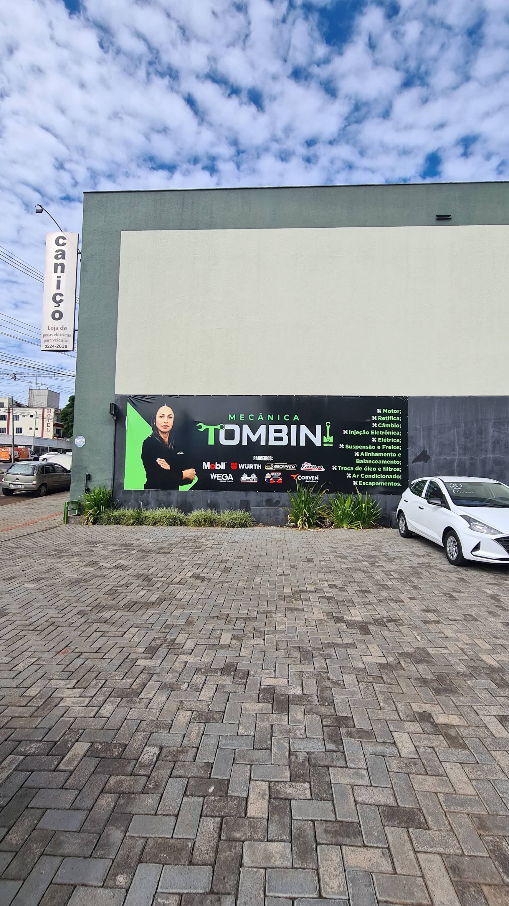
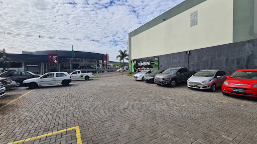

Motor e retífica
Atendimento para motor, retífica e câmbio.
MECÂNICA COMPLETA · BAIXADA
Motor, injeção, suspensão, freios e muito mais em um só lugar, com atendimento direto em Pato Branco.

Quem já passou pela oficina destaca atendimento, atenção, qualidade e preço justo.
A Mecânica Tombini atende na Avenida Tupi, no bairro Baixada. Além da estrutura para serviços automotivos, a ficha pública indica acessibilidade na entrada e recomenda agendamento.
Informações consultadas em setembro de 2026.
Serviços apresentados publicamente pela própria Mecânica Tombini.
Atendimento para motor, retífica e câmbio.
Injeção eletrônica e serviços elétricos automotivos.
Manutenção de suspensão e sistema de freios.
Alinhamento, balanceamento e cambagem.
Troca de óleo e substituição de filtros.
Ar-condicionado, escapamentos, borracharia e limpezas em geral.

REGISTRO PÚBLICO · GOOGLE MAPSA ficha pública recomenda marcar hora. Envie os dados do veículo pelo WhatsApp e consulte a disponibilidade antes de ir até a oficina.
Preparar solicitação ↗“Atendimento excelente! Equipe profissional, preço justo! Ou seja, recomendo a todos.”
“Fiz alguns serviços e fiquei contente, trabalho de qualidade e preço justo. Indico a quem precisar de mecânica.”
“Sempre faço minhas revisões na Mecânica Tombini e super indico toda a atenção e profissionalismo.”
Segunda a sexta: 08:00–12:00 e 13:30–18:00
Sábado: 08:00–12:00 · Domingo: fechado
Preencha os dados abaixo. O site prepara a mensagem e direciona você para o WhatsApp do número informado pela oficina.
Abrir WhatsApp diretamente ↗